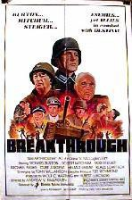

#7750 Steiner - The Iron Cross, 2nd Part
Alternativ: Breakthrough (Englischer Titel)
 
 IMDB-Wertung: 5.0 / 10
IMDB-Wertung: 5.0 / 10  Metascore: 0
Metascore: 0 
In 1944 German sergeant Rolf Steiner is on the Russian Front where out of frustration he hits an officer. Steiner is sent on leave to Paris to avoid further incidents. In Paris news of the Allied Invasion of Normandy arrive and Steiner meets up with his unit there being recently transferred from Russia. Steiner finds out that his old company commander from the Russian Front, Major Von Stransky, is his new commander. Steiner and Von Stransky hate one another. The German general in charge of the area is General Hofmann who's a member of the conspiracy to kill Hitler. Hofmann hopes to surrender his troops to the Americans. He reveals his plans to Sergeant Steiner and asks Steiner to meet the Americans to negotiate a possible surrender if Hitler is eliminated. When the plot to kill Hitler fails, the surrender plan is in jeopardy.
Jahr: 1979
Dauer: 110 Minuten
FSK: 16
Land: West-Deutschland Studio: Neue Constantin FilmTonspuren:
Untertitel:
Auflösung: 1080p (1792x1080) Größe: 7833 MB
Genre: Drama, Krieg
Regisseur: Andrew V. McLaglen
Drehbuch: Peter Berneis
Soundtrack: Peter Thomas
Darsteller:
 Richard Burton als Sgt. Rolf Steiner
Richard Burton als Sgt. Rolf Steiner Rod Steiger als Gen. Webster
Rod Steiger als Gen. Webster- Helmut Griem als Maj. von Stransky
 Klaus Löwitsch als Uffz. Krüger
Klaus Löwitsch als Uffz. Krüger Michael Parks als Sgt. Anderson
Michael Parks als Sgt. Anderson- Werner Pochath als Schütze Keppel
- Véronique Vendell als Yvette
- Horst Janson als Capt. Berger
- Joachim Hansen als Capt. Kistner
 Günter Meisner als SS-Offizier
Günter Meisner als SS-Offizier Curd Jürgens als Gen. Hofmann
Curd Jürgens als Gen. Hofmann Robert Mitchum als Col. Rogers
Robert Mitchum als Col. Rogers Christoph Waltz als Sanitäter in der Eröffnungssequenz am Bahnhof beim Verwundetenzug (uncredited)
Christoph Waltz als Sanitäter in der Eröffnungssequenz am Bahnhof beim Verwundetenzug (uncredited)- Walter Ullrich als Schütze Hauser
- Dieter Schidor als Cpl. Paul Anselm
- Bruno Dietrich als Schütze Nissen
- Sonja Jeannine als Jeanette
- Günter Clemens als Cpl. Dorfmann
- Michael Büttner als Schütze Junghans
- Dieter B. Gerlach als Uffz. Klingsmann
- Michael Brennicke als Soldier (uncredited)
- Gernot Duda als Several Roles (uncredited)
- Miguel Herz-Kestranek als Bethke (uncredited)
- Mike Jenkins als Army Lieutenant with Fieldglasses (uncredited)
 Arnold Marquis als Col. Rogers (uncredited)
Arnold Marquis als Col. Rogers (uncredited)- Edgar Ott als Gen. Webster (uncredited)
 Sieghardt Rupp als Cpl. Rothe (uncredited)
Sieghardt Rupp als Cpl. Rothe (uncredited)- Hans-Jürgen Schatz als Schulze (uncredited)
- Peter Thom als Several Roles (uncredited)
Datei: X:\2-Dilogie(N-Z)\Steiner - Das Eiserne Kreuz\Steiner - The Iron Cross, 2nd Part (1979, FSK16, 1792x1080).mkv seit 15.12.2017
Festplatte: HD Collection-2(A-Z)-3(A-M)
 Alle Filme aus Gruppe '2-Dilogie(N-Z)\Steiner - Das Eiserne Kreuz'
Alle Filme aus Gruppe '2-Dilogie(N-Z)\Steiner - Das Eiserne Kreuz'